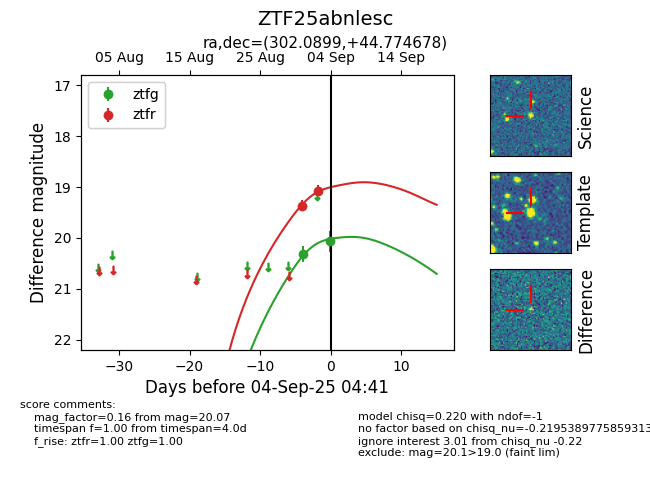

FINK: ZTF25abnlesc
Lasair: ZTF25abnlesc
ALeRCE: ZTF25abnlesc
ZTF25abnlesc (ztf,fink)
equatorial (ra, dec) = (302.0899,+44.77468)
galactic (l, b) = (80.5090,+6.49222)

last atlaso=19.03, ztfg=20.49, ztfr=19.50
1 atlaso, 4 ztfg, 8 ztfr detections